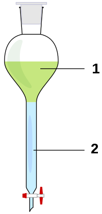

y sin marco
y sin marco
| Markdown Tests | Symbols |
Símbolos literales:
$ : Literal
< : Literal
& : Literal
· : Literal
\\ : Literal
Marcos pequeños: Fondo blanco y Fondo transparente.
Marcos grandes: Fondo blanco y Fondo transparente.
Incluyendo imágenes sin tamaño: Con marco y sin marco
Incluyendo imágenes con tamaño: Con marco  y sin marco
Un hipervínculo: google.
Html tal cual:
Y varios de fomato:
Un poco de cursiva y otro poco de subrayado
Con avance simple de línea.
Fórmula al paso ($2+2 = 4$) y centrada: $$2+2=4$$ con MathJax.
Por último varios blancos en medio de una línea.